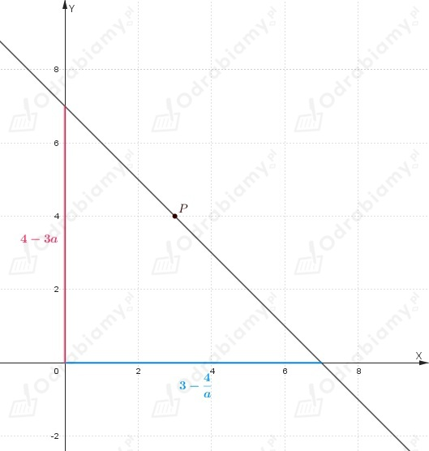

Dana jest funkcja:
Należy wyznaczyć równanie stycznej do wykresu funkcji f, która jest prostopadła do prostej przechodzącej przez punkty A(9, 0) oraz B(0, -1).
Wyznaczamy współczynnik kierunkowy prostej AB:
Skoro prosta styczna do wykresu funkcji f jest prostopadła do prostej AB, to jej współczynnik kierunkowy ma wartość:
Wobec tego:
Wyznaczamy pochodna funkcji f:
Zapisujemy, że:
Zauważmy, że dla x0=1 dostajemy:
Podzielmy wielomian np. przy pomocy schematu Hornera.
| | | | | |
| | | | | |
Wobec tego:
czyli:
Wnioskujemy, że:
Wyznaczamy wartość funkcji f dla x0=1:
Zapisujemy równanie stycznej:
Dana jest funkcja:
Wyznaczamy pochodną funkcji f:
1) Wyznaczamy punkt przecięcia wykresu funkcji f z osią OX:
Wobec tego punkt (6, 0) jest punktem styczności.
Wyznaczamy wartość funkcji f' dla x=6:
Natomiast:
Zapisujemy równanie stycznej:
2) Wyznaczamy punkt przecięcia wykresu funkcji f z osią OY:
Wobec tego punkt (0, 2) jest punktem styczności.
Wyznaczamy wartość funkcji f' dla x=0:
Natomiast:
Zapisujemy równanie stycznej:
Wnioskujemy, że proste styczne są względem siebie równoległe, ponieważ ich współczynniki kierunkowe mają te same wartości,
co należało wykazać.
Zapisujemy równania stycznych w postaci ogólnej:
Obliczamy odległość między stycznymi korzystając ze wzoru na odległość między prostymi równoległymi:
Z treści zadania wiemy, że prosta:
jest styczna do wykresu funkcji:
w punkcie o dodatniej odciętej, zatem:
Wyznaczamy pochodną funkcji f:
Wiemy, że:
zatem
Wnioskujemy, że:
Wyznaczamy wartość funkcji f dla x0=1:
Zauważmy, że równanie stycznej zapisujemy w postaci:
zatem
Rozwiązujemy równanie:
Niech
Wnioskujemy, że:
Dane są funkcje:
Wyznaczamy pochodną funkcji f:
Wyznaczamy pochodną funkcji g:
Styczne w punkcie x0 są prostopadłe, gdy:
zatem
Wyznaczamy punkt przecięcia wykresów funkcji:
Skoro x0=1 jest punktem przecięcia wykresów funkcji, to:
Dana jest funkcja:
Z rysunku odczytujemy, że funkcja f osiąga minimum w punkcie:
natomiast maksimum w punkcie:
Wyznaczamy środek odcinka AB:
Wyznaczamy współczynnik kierunkowy stycznej do wykresu funkcji f w punkcie x0=2.
Wyznaczamy pochodną funkcji f:
Wyznaczamy wartość funkcji pochodnej w punkcie x0=2 (wartość współczynnika kierunkowego stycznej):
Skoro prosta, której równanie mamy wyznaczyć jest równoległa do stycznej do wykresu funkcji f, to jej współczynnik kierunkowy jest taki sam, zatem:
Wyznaczamy równanie prostej przechodzącej przez punkt S(3, 6):
Wobec tego:
Z treści zadania wiemy, że punkt P(1, -2) należy do wykresu funkcji:
zatem
Zapisujemy równanie prostej w postaci kierunkowej:
Skoro styczna do wykresu funkcji f poprowadzona w punkcie P jest prostopadła do podanej prostej, to znaczy, że współczynnik kierunkowy stycznej ma wartość:
Wyznaczamy pochodną funkcji f:
wobec tego:
czyli
Wiemy, że:
zatem
Wyznaczamy wartość a:
Wnioskujemy, że a=-3 i b=2.
Należy wyznaczyć równanie prostej przechodzącej przez punkt P(3, 4), która z dodatnimi półosiami układu współrzędnych tworzy trójkąt o najmniejszym polu.
Prosta przechodząca przez punkt P ma wzór:
zatem
Wobec tego:
Wyznaczamy miejsce zerowe funkcji:
Wyznaczamy punkt przecięcia wykresu funkcji z osią OY:
Szkicujemy rysunek pomocniczy:

założenia:
Trójkąt jest ograniczony dodatnimi półosiami układu współrzędnych oraz prostą, zatem funkcja opisująca prostą jest malejąca, więc:
Zapisujemy wzór funkcji opisującej pole trójkąta:
Wyznaczamy pochodną funkcji P:
Wyznaczamy punkty krytyczne:
Zauważmy, że:
Zatem funkcja P ma w punkcie a=-4/3 minimum.
Sprawdzamy, czy w tym punkcie funkcja P przyjmuje również wartość najmniejszą:
Zatem funkcja P przyjmuje wartość najmniejszą dla a=-4/3.
Wyznaczamy wartość współczynnika b:
Zapisujemy równanie prostej przechodzącej przez punkt P:
Obliczamy pole trójkąta:
Z treści zadania wiemy, że punkty A(0, 0), B(6, 0) i C(x, y) są wierzchołkami trójkąta.
Korzystając ze wzoru na pole trójkąta dostajemy:
Wiemy również, że punkt C należy do wykresu funkcji:
zatem:
Zauważmy, że:
wobec tego dla każdej liczby rzeczywistej:
wnioskujemy, że:
Możemy zapisać, że:
Zapisujemy wzór na pole trójkąta jako funkcję zmiennej x:
Wyznaczamy pochodną funkcji P:
Wyznaczamy punkty krytyczne:
Wiemy, że:
Wnioskujmy, że funkcja P' zmienia znak z dodatniego na ujemny w x=-1, zatem w tym punkcie funkcja P ma maksimum.
Sprawdzamy, czy w tym punkcie funkcja P ma wartość największą:
Wnioskujemy, że funkcja P ma w punkcie x=-1 wartość największą.
Wyznaczamy współrzędne wierzchołka C.
Pole trójkąta:
Należy wyznaczyć współrzędne punktu P należącego do wykresu funkcji f, który leży najbliżej prostej:
Niech P(x, y).
Zatem należy podać takie współrzędne punktu P, aby jego odległość od prostej była najmniejsza.
a)
Wiemy, że:
Zatem:
Korzystając ze wzoru na odległość punktu od prostej zapisujemy wzór funkcji opisujący odległość punktu P od prostej x-y+2=0:
Zauważmy, że:
zatem dla każdej liczby rzeczywistej:
wobec tego:
Zauważmy, że funkcja d jest funkcją kwadratową, której wykresem jest parabola ramionami skierowana w górę, zatem funkcja d przyjmuje wartość najmniejszą w wierzchołku paraboli.
Wyznaczamy pierwszą współrzędną wierzchołka paraboli będącej wykresem funkcji d:
Zatem wyznaczamy wartość drugiej współrzędnej punktu P:
Wnioskujemy, że:
b)
Wiemy, że:
Zatem:
Korzystając ze wzoru na odległość punktu od prostej zapisujemy wzór funkcji opisujący odległość punktu P od prostej x-y+2=0:
Zauważmy, że:
zatem dla każdej liczby rzeczywistej:
wobec tego:
Możemy zapisać, że:
Wyznaczamy pochodną funkcji d:
Wyznaczamy punkty krytyczne:
1)
Wiemy, że:
Zatem w punkcie x=2 pochodna zmienia znak z ujemnego na dodatni, więc w tym punkcie funkcja d ma minimum.
Sprawdzamy, czy w tym punkcie funkcja d ma również wartość najmniejszą.
Zatem w punkcie x=2 funkcja d ma wartość najmniejszą.
Wyznaczamy współrzędne punktu P:
czyli:
2)
Wiemy, że:
Zatem w punkcie x=0 pochodna zmienia znak z ujemnego na dodatni, więc w tym punkcie funkcja d ma minimum.
Sprawdzamy, czy w tym punkcie funkcja d ma również wartość najmniejszą.
Zatem w punkcie x=0 funkcja d ma wartość najmniejszą.
Wyznaczamy współrzędne punktu P:
czyli:
Obliczamy odległość punktu P1 od prostej:
Obliczamy odległość punktu P2 od prostej:
Zauważamy, że:
Wnioskujemy, że: